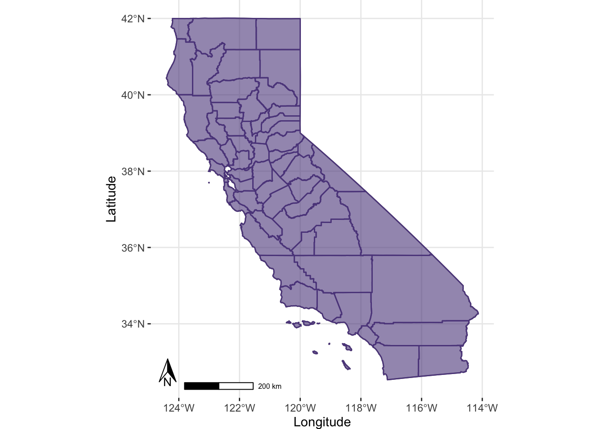
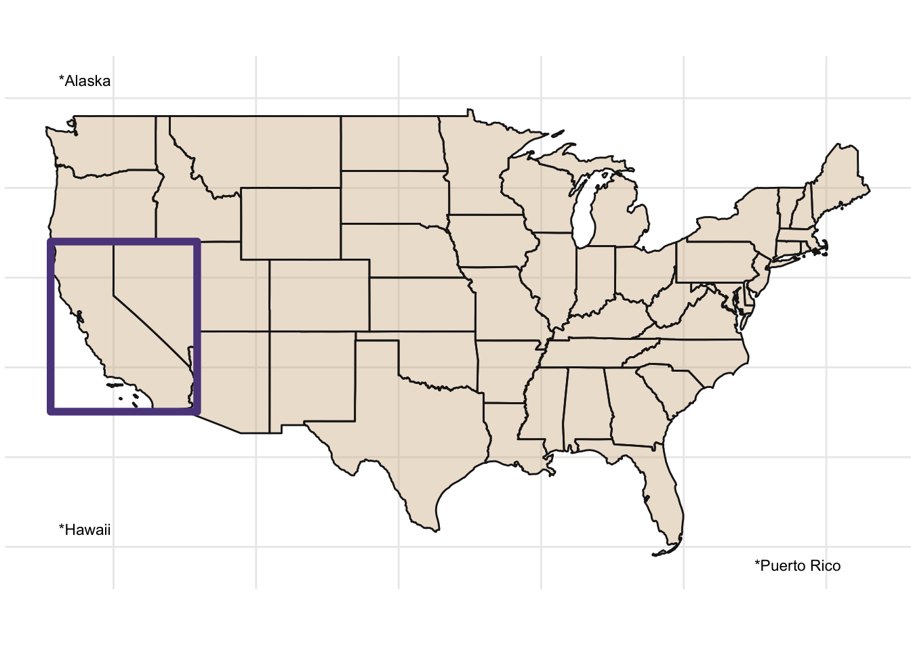
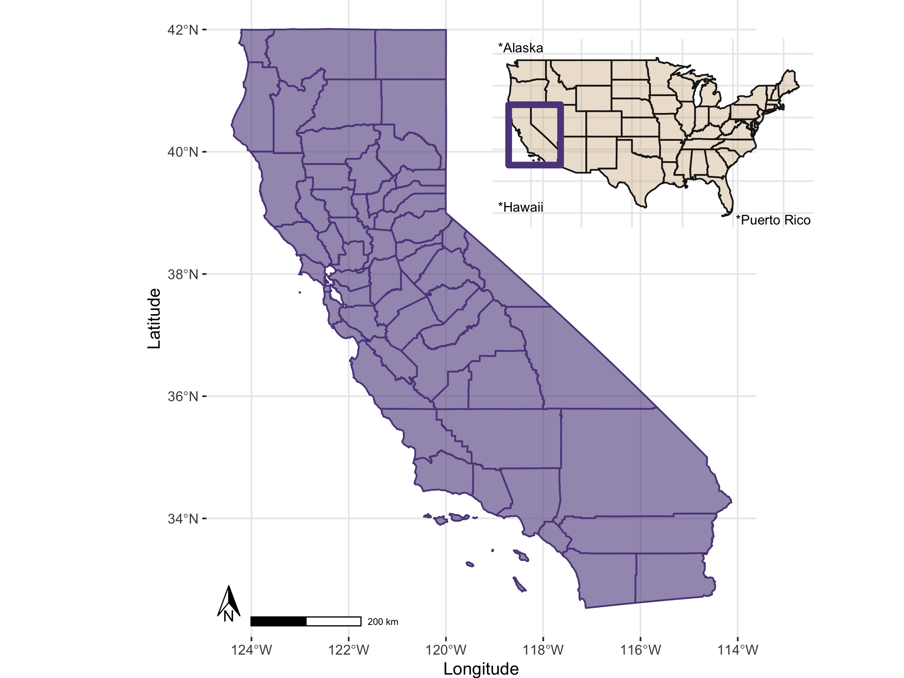

There are many ways to use spatial data to make maps with insets, or smaller zoomed out indicators of where you main map occurs in the world. Here’s a few possible ways you could do this (there are likely many more…)
Let’s load the libraries we’re going to need first.
library(here)
library(dplyr)
library(viridis)
library(ggplot2)
library(sf)
library(USAboundaries)
library(ggspatial)Let’s use some USA boundaries and California county boundaries to make a zoomed map of CA counties, and an inset showing the USA and location of CA. We’ll usedata from the USAboundaries package.
# get USA states, filter out Puerto Rico, Alaska, and Hawaii for now
us <- us_boundaries(type="state", resolution = "low") %>%
filter(!state_abbr %in% c("PR", "AK", "HI"))
# get CA boundary with high definition
ca <- USAboundaries::us_states(resolution = "high", states = "CA")
# make a box around CA (a grid with an n=1) for inset
ca_box <- st_make_grid(ca, n = 1)
# get CA county boundary
ca_co <- USAboundaries::us_counties(resolution = "high", states = "CA")Now we make our primary map, in this case, a map of California with all the counties. Note we use fill=NA to make a completely hollow boundary and allow for some more creative use of the alpha transparency. We’ll also add a scale bar and a north arrow with the {ggspatial} library.
library(ggspatial)
# Main map of CA
p1 <- ggplot() +
geom_sf(data = ca, color = "grey50", fill = "mediumpurple4", alpha=0.6) +
geom_sf(data = ca_co, color = "mediumpurple4", fill=NA, alpha=0.9) +
theme(axis.text.y = element_text(angle = 90, hjust = 0.5)) +
theme_bw() +
xlab("Longitude") +
ylab("Latitude")+
coord_sf() +
theme(plot.background = element_blank(),
panel.border = element_blank(),
plot.margin = unit(c(0, 0, 0 ,0), "mm")) +
ggspatial::annotation_north_arrow(location="bl", height = unit(.75, "cm"),
style = ggspatial::north_arrow_orienteering(text_size = 8),
width = unit(.5, "cm"), pad_y = unit(0.4, "cm")) +
ggspatial::annotation_scale(location="bl",
pad_x = unit(1, "cm"), text_cex = 0.5, height = unit(0.2, "cm"))
p1
Great, now let’s create an inset map, which for this vignette, we’ll use a map of the US (lower 48), with a small box around the state of CA to indicate this is our “study area”. Let’s also add at least some font showing we recognize Hawaii, Alaska, and Puerto Rico count too, but we are going to show these as text for now.
# Inset map: US
p2 <- ggplot() +
geom_sf(data = us, colour = "grey10", fill = "tan", alpha=0.4) +
coord_sf() +
theme_minimal() +
geom_sf(data=ca_box, color="mediumpurple4", fill=NA, lwd=2) +
labs(x = NULL, y = NULL) +
annotate(geom = "text", x=-72, y=24, label="*Puerto Rico", size=3)+
annotate(geom = "text", x=-122, y=51, label="*Alaska", size=3) +
annotate(geom = "text", x=-122, y=26, label="*Hawaii", size=3) +
theme(axis.text.x = element_blank(),
axis.text.y = element_blank(),
axis.ticks = element_blank(),
axis.title.x = element_blank(),
axis.title.y = element_blank(),
plot.background = element_blank(),
panel.border = element_blank(),
plot.margin = unit(c(0, 0, 0 ,0), "mm"))
p2
Now we need to use a few additional libraries to pull this together.
grid.newpage()viewport”print both of these so we can save this object out.# add diff libraries
library(grid)
library(gridExtra)
grid.newpage()
mainmap <- viewport(width = 1, height = 1, x = 0.5, y = 0.5) # main map
insetmap <- viewport(width = 0.36, height = 0.3, x = 0.72, y = 0.8)
print(p1, vp = mainmap)
print(p2, vp = insetmap)Once we have this great map, we probably want to save this out to something useful. Whenever possible, PDF is ideal because it retains the best quality for vector based graphics (you can zoom way in and not lose any resolution, vs. .png or .jpg, which will become grainy at higher levels of zooming). My default go-to option is usually ggsave, but in this case, we may need to use the pdf() or png() functions depending on your preference or need. Here’s an example:
# make a filetype and name you'll be saving...same setup if you switch this to "pdf()"
png(filename = "img/ca_cnty_us_inset_map.png", width = 8, height = 6, units = "in", res=300)
# make a blank page
grid.newpage()
# setup your first main figure on your blank canvas, where will it be and how big?
mainmap <- viewport(width = 1, height = 1, x = 0.5, y = 0.5) # main map
# set up the inset map: where will it be and how big?
insetmap <- viewport(width = 0.36, height = 0.3, x = 0.72, y = 0.8)
# print them all!
print(p1, vp = mainmap)
print(p2, vp = insetmap)
dev.off() # the png or pdf or jpg won't save until you run this command!And there you have it…hopefully a decent figure you could use in a manuscript or a report.
